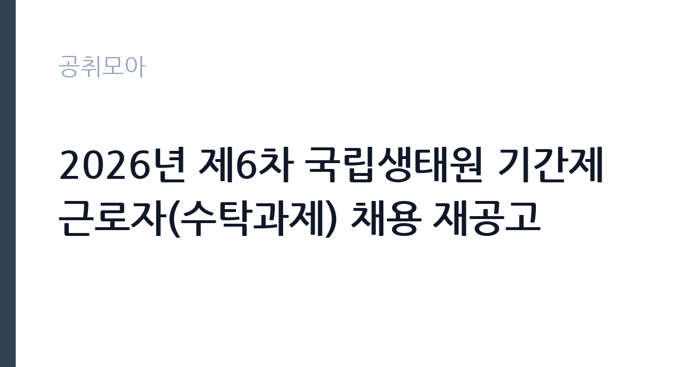

[공공기관] 2026년 제6차 국립생태원 기간제근로자(수탁과제) 채용 재공고
국립생태원 · 충남 · 마감 2026-10-21 (D-10) · 출처 잡알리오

한눈에 보는 모집 조건
| 기관 | 국립생태원 |
|---|---|
| 공고명 | 2026년 제6차 국립생태원 기간제근로자(수탁과제) 채용 재공고 |
| 고용형태 | 기간제 |
| 근무지 | 충남 |
| 게시일 | 2026-10-12 |
| 마감일 | 2026-10-21 (D-10) |
지원자격, 이렇게 읽으세요
- 공공기관 채용공시
- 세부 조건은 원문 공고문 확인
응시자는 국립생태원 기간제근로자 관리세칙의 결격사유에 해당하지 않아야 하며, 해당분야 전공자나 경력자로서 업무 수행이 가능해야 합니다. 전문위원 마급 수준의 자격과 경력이 요구되는 자리로, 관련 분야 석사학위 취득 후 2년 이상 경력이나 학사학위 취득 후 5년 이상 경력, 기사 자격 취득 후 2년 이상 경력 같은 기준이 적용됩니다. 남자는 병역을 마쳤거나 면제되어야 하며, 장애인과 보훈대상자는 관계 법령에 따라 우대됩니다. 최종 합격 후 즉시 출근이 가능해야 합니다.
이 공고의 포인트
이 공고의 포인트는 수탁과제 소속이라는 점입니다. 수탁과제는 외부 기관이 발주한 연구과제를 수행하는 자리라, 과제 수행 경력이 연구 이력서에 직접 남는 실무형 채용입니다. 재공고라서 앞선 차수보다 지원 문턱의 체감이 낮고, 전문위원 마급은 석사와 박사 사이 경력 단계의 연구자에게 맞는 자리입니다. 충남 서천의 국립생태원이라는 국내 대표 생태 전문기관에서 일한다는 점도 연구 커리어의 개성이 됩니다.
전형은 어떻게 진행되나
잡알리오 공시와 국립생태원 채용 홈페이지를 통해 원서를 접수합니다. 서류전형과 면접전형을 거쳐 최종 합격자를 선발하는 것이 일반적인 흐름이며, 심사 기준과 일정은 원문 공고문에서 확인하십시오. 재공고 특성상 접수 기간이 짧을 수 있으니 공고문을 보는 즉시 서류를 준비하시기를 권합니다.
원문에서 확인한 전형 방식
가. 국립생태원 「기간제근로자 관리세칙」 제8조의 결격사유에 해당되지 않은 자 나. 자격 및 경력 요건: 해당분야 전공자 및 경력자로서 해당 업무 수행이 가능한 자 (※전문위원 마급) 위 “가부터 라”의 자격 및 경력요건에 포함할 수 없는 자격·기능 및 경력이 있는 자 * 비교를 위함 - '전문위원 라급' 1. 채용예정 직무분야와 관련된 석사학위 취득 후 2년 이상 경력이 있는 자 2. 채용예정 직무분야와 관련된 학사학위 취득 후 5년 이상 경력이 있는 자 3. 기사 자격을 취득하고 해당 분야에 2년 이상 경력이 있는 자 4. 산업기사 자격을 취득하고 해당 분야에 6년 이상 경력이 있는 자 다. 병역을 필하였거나 면제된 자(남자만 해당) 라. 장애인 또는 보훈대상자 관계법에 따라 우대(관련 서류 제출 시) 마. 최종 합격 후 즉시 출근이 가능한 자
이런 분께 추천해요
- 생태와 환경 분야 석사 이상 학위와 연구 경력을 보유한 분입니다. 수탁과제 수행 경험이 연구 이력의 한 줄이 되는 자리입니다.
- 관련 분야 기사 자격과 실무경력을 갖춘 분입니다. 현장 조사와 데이터 분석 경험을 살릴 수 있습니다.
- 서천 근무가 가능하고 즉시 출근할 수 있는 분입니다. 과제 일정에 맞춰 바로 투입될 준비가 된 분에게 맞습니다.
지원 전 체크리스트
- 본인의 학위와 경력, 자격이 전문위원 마급 기준 중 하나에 해당하는지 대조하셨습니까.
- 국립생태원 기간제근로자 관리세칙의 결격사유에 해당하지 않는지 확인하셨습니까.
- 즉시 출근이 가능한 일정인지 정리하셨습니까.
- 접수 마감일인 10월 21일 전에 서류 제출을 마치실 수 있습니까.
모집 일정과 제출 타이밍
공고 게시일은 2026년 10월 12일이며 접수 마감은 10월 21일입니다. 재공고라 접수 기간이 9일로 짧으니, 경력증명서와 학위증명서 발급을 공고 당일에 신청하십시오. 수탁과제 채용은 과제 착수 일정과 맞물려 면접과 임용이 빠르게 진행되는 경우가 많습니다.
직무 이해하기: 공공기관
국립생태원은 환경부 산하 기관으로 생태계 조사와 연구, 생태 전시와 교육, 생태관광과 지역 협력 사업을 수행합니다. 수탁과제 기간제는 발주 기관의 연구과제를 수행하며, 현장 조사와 시료 분석, 데이터 정리와 보고서 작성이 주요 업무입니다. 서천 본원과 에코리움, 야외 조사 현장을 오가는 현장 중심 근무가 예상됩니다.
자기소개서 작성 팁
자기소개서는 연구 경력과 과제 수행 경험을 중심으로 쓰십시오. 수행한 조사와 분석, 작성한 보고서의 주제와 역할을 구체적으로 서술하시고, 이번 수탁과제와 연결되는 본인의 전문성을 한 문단으로 정리하십시오. 즉시 투입 가능한 실무자라는 인상을 주는 것이 재공고 전형의 핵심입니다.
면접 준비 포인트
면접에서는 전공 지식과 현장 조사 경험, 과제 수행 계획을 묻습니다. 본인의 연구 분야와 국립생태원의 사업 방향을 연결해 답변하시고, 야외 조사와 팀 연구에 대한 적응력을 사례로 보여주십시오.
급여·근무조건 읽는 법
국립생태원 기간제의 보수는 기관 보수지침에 따라 직급별로 정해지며, 전문위원 마급은 연구경력 단계에 맞는 급여가 적용됩니다. 구체적인 월 보수와 수당, 계약기간과 퇴직금 조건은 해당 공고문의 근로조건에서 확인하셔야 합니다. 수탁과제는 과제 예산에 따라 조건이 정해지므로 원문 대조가 필수입니다.
자주 묻는 질문
- 재공고라서 조건이 완화된 것입니까?
재공고는 앞선 모집에서 적격자를 충원하지 못해 다시 모집하는 것으로, 응시자격 자체가 바뀌지 않는 경우가 많습니다. 다만 경쟁률이 낮아질 수 있어 요건을 갖춘 분에게는 기회가 됩니다. - 수탁과제와 자체과제는 무엇이 다릅니까?
수탁과제는 외부 발주 과제를 수행하는 자리로 과제 기간에 따라 계약이 정해지고, 자체과제는 기관 고유 예산으로 운영됩니다. 경력 인정 측면에서는 모두 연구 수행 경력으로 평가됩니다. - 서천 근무 외에 다른 지역 배치가 있습니까?
국립생태원 본원은 충남 서천에 있으며, 과제 특성에 따라 출장과 외근이 있을 수 있습니다. 정확한 근무지는 해당 공고문의 근무조건에서 확인하십시오.
함께 보면 좋은 공고
[공공기관] 2026년도 한국임업진흥원 제3차 인재채용(보훈특별고용) 공고 — 마감 2026-11-02[공공기관] 한전KDN(주) 대구본부 정보통신설비 유지보수 일용근로자 모집공고 — 마감 2026-10-26[공공기관] 제2026-6회 기초과학연구원 지하실험연구단 박사후연구원 채용 공고 — 마감 2026-11-06출처: 잡알리오 공개정보를 바탕으로 공취모아가 정리한 안내글입니다. 모집 조건·일정은 변경될 수 있으니 지원 전 반드시 원문 공고문을 확인하세요. 본 글은 정보 제공용이며 합격을 보장하지 않습니다.